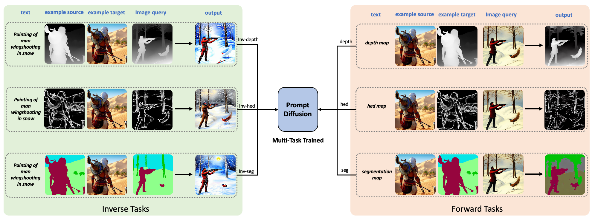

More Examples
More Depth-to-Image Examples

More Hed-to-Image Examples

More Seg-to-Image Examples

We present Prompt Diffusion, a framework for enabling in-context learning in diffusion-based generative models. Given a pair of task-specific example images, such as depth from/to image and scribble from/to image, and a text guidance, our model automatically understands the underlying task and performs the same task on a new query image following the text guidance. To achieve this, we propose a vision-language prompt that can model a wide range of vision-language tasks and a diffusion model that takes it as input. The diffusion model is trained jointly on six different tasks using these prompts. The resulting Prompt Diffusion model becomes the first diffusion-based vision-language foundation model capable of in-context learning. It demonstrates high-quality in-context generation for the trained tasks and effectively generalizes to new, unseen vision tasks using their respective prompts. Our model also shows compelling text-guided image editing results. Our framework aims to facilitate research into in-context learning for computer vision, with code publicly available at here.
Illustration of Prompt Diffusion trained jointly on six vision-language tasks.
@article{wang2023promptdiffusion,
title = {In-Context Learning Unlocked for Diffusion Models},
author = {Wang, Zhendong and Jiang, Yifan and Lu, Yadong and Shen, Yelong and He, Pengcheng and Chen, Weizhu and Wang, Zhangyang and Zhou, Mingyuan},
journal = {arXiv preprint arXiv:2305.01115},
year = {2023},
url = {https://arxiv.org/abs/2305.01115}
}